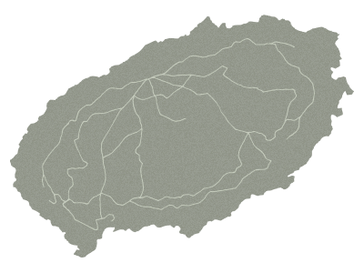
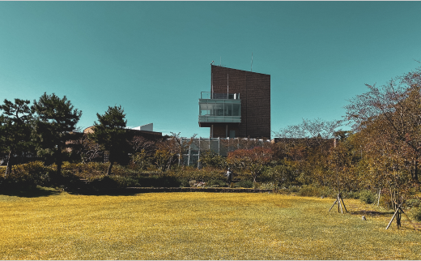
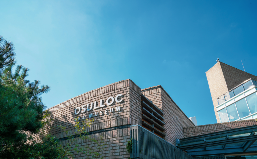
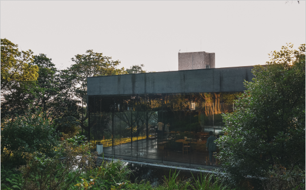

차 한 잔의 여유가 간절해지는 순간, 좋은 사람과 함께하면 삶은 더 아름다워 집니다.
메인 영역
오설록 in JEJU
-
색(色)이 좋은 서광 차밭
산방산 근처의 서광 차밭은 대기가 한라산을 지나며 많은 구름과 안개를 형성하고, 이는 자연 차광 효과를 내 찻잎의 색을 좋게 만듭니다. 온화한 기후와 자연 차광 효과는 고급 품질의 차를 만들 때 더없이 좋은 생육 조건이 됩니다. 서광리는 전체가 돌밭이라고 해도 될 만큼 작물 재배가 어려운 곳이었지만, 1983년 개간을 시작해 척박한 땅에 새생명을 불어넣어 우리나라에서 가장 광대한 차밭을 조성하였습니다.
-
향(香)이 좋은 돌송이 차밭
돌송이 차밭 지역은 예로부터 ‘화산재가 굳어서 돌멩이같이 잘게 부서진 돌덩이’가 많아 ‘돌송이’라고 불리어 왔습니다. 돌이 전부였던 황무지를 맨손으로 일궈낸 곳이라 오설록의 아름다운 집념이 가장 상징적으로 드러난 차밭입니다. 이곳은 산과 바다를 동시에 접하고 있어 매년 4월 한라산의 잔설을 품은 산바람과 바다의 수분을 머금은 바닷바람이 밤낮으로 불어와 돌송이 차밭에서 채엽한 녹차는 향이 매우 좋습니다.
-
맛(味)이 좋은 한남 차밭
과거 ‘해들이밭’이라 하여 마을에서 가장 먼저 해가 드는 곳이라 불렸던 한남 차밭은 아침부터 불어오는 따뜻한 바람 덕분에 사람과 자연이 모두 온화하게 성장할 수 있는 곳입니다. 한남 차밭은 유기농 재배와 효율적인 경작을 위해 많은 노력과 투자를 하여 질이 좋은 고품질의 녹차를 생산하고 있습니다.
제주는 엄청난 생명력을 가진 2,100여종의 식물자원이 분포하는 생태계 보고입니다.
이러한 제주는 화산지역이라는 생태계적 특성을 가져 차 품질의 특이성을 만들어 냅니다.
오설록의 차밭은 지리적 특성에 따라서 차의 특색이 조금씩 달라지는데,
3대 차밭의 찻잎들이 조화롭게 어루어져 색(色), 향(香), 맛(味)이 뛰어납니다.
본 이미지의 저작권은 (주)오설록에 있습니다.
오설록 VR 투어
서광차밭
서광 차밭은 제주 서귀포시에 조성된 광활한 유기농 차밭입니다.
오설록이 1983년부터 20여 년간 개간하여 척박한 땅을 웅비의 땅으로 변모시켜
현재는 우리나라에서 가장 광활한 유기농 차밭이 되었습니다.



티스톤
제주 오설록 티스톤은 생활 속 멋진 차문화를 경험하는 차문화 체험공간입니다.
추사 김정희 선생의 세한도와 추사체를 주제로한 미디어 아트를 비롯해
멋스러운 티타임 공간이 마련되어 있습니다.
이니스프리 하우스
이니스프리 제주하우스는 청정섬 제주 원료로 만든 화장품, 천연 비누 만들기 체험공간, 제주의 신선한 식재료로 만든 오가닉 카페 등 제주 자연 속에서 오감을 만족시키는 체험과 휴식을 즐길 수 있는 공간입니다.
이니스프리 하우스 VR 투어VR Contents Team SHINSULLOC
-
KIM MEANYOUNG
-
KOH JIYEON
-
JIN GAHYEON
2020년 실감형 콘텐츠 창작자 양성사업
VR을 활용한 체험관광 창작자 양성과정
일부 이미지와 텍스트는 오설록 홈페이지 (www.osulloc.com)를 참조하였습니다.
VR제작에 협조해 주신 오설록에 진심으로 감사드립니다.
WEB Design. hyacinta
Copyright Ⓒ 2020 Shinsulloc All rights reserved.